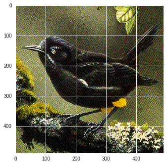

Would you like to support my research and work? My patreon link is here. Thank you, I will remember you!
CNNs - The VGG16 Model with Keras Simple Prediction
In this notebook we are just going to look at the VGG16 model and try a simple prediction with a now unfortunately extinct Kauai ‘O’o bird’s photo.
The sweet, bell-like tones of the Kauai O’o were heard for the last time nearly 20 years ago. Below through the link you can listen to its sad song.

Let’s also look at the photo I am going to use for this example.
import matplotlib.pyplot as plt
import matplotlib.image as mpimg
img=mpimg.imread('/content/drive/My Drive/colab_database/kauai.jpg')
imgplot = plt.imshow(img)
plt.show()
Since my humble laptop is struggling running deep learning algorithms I will do this analysis with google’s colaboratory research project. You can, if you want, use this free tool too.
from google.colab import drive
drive.mount('/content/drive', force_remount=True)Mounted at /content/drive
from keras.applications.vgg16 import VGG16
# load the model
model = VGG16()from keras.preprocessing.image import load_img
# load an image from file
image = load_img('/content/drive/My Drive/colab_database/kauai.jpg', target_size = (224,224))from keras.preprocessing.image import img_to_array
# convert the image pixels to a numpy array
image = img_to_array(image)# reshape data for the model
image = image.reshape((1, image.shape[0], image.shape[1], image.shape[2]))from keras.applications.vgg16 import preprocess_input
# prepare the image for the VGG model
image = preprocess_input(image)# predict the probability across all output classes
yhat = model.predict(image)from keras.applications.vgg16 import decode_predictions
# convert the probabilities to class labels
label = decode_predictions(yhat)
# retrieve the most likely result, e.g. highest probability
label = label[0][0]
# print the classification
print('%s (%.2f%%)' % (label[1], label[2]*100))water_ouzel (46.29%)
Great Job!. The VGG16 model correctly predicted our Kauai O’o bird as a ‘water_ouzel’ (known also as american dipper bird). Applauds to VGG16 for remembering the Kauai O’o.